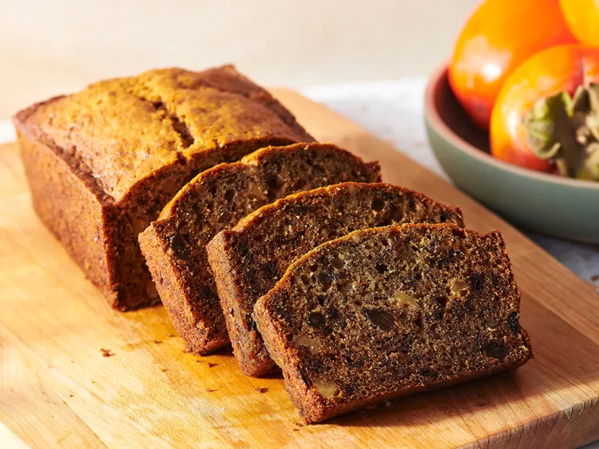

Persimmon Bread

Description
This persimmon bread is light, moist, and a delicious way to enjoy persimmons when in season.
Ingredients
- 2 large eggs
- ¾ cup white sugar
- 1 ½ cups all-purpose flour
- ½ teaspoon salt
- ½ cup vegetable oil
- 1 teaspoon ground cinnamon
- 1 cup persimmon pulp
- ½ cup chopped walnuts
- 1 teaspoon baking soda
- ½ cup raisins
Steps
- Gather ingredients. Preheat the oven to 325 degrees F (165 degrees C). Lightly grease a 9x4-inch pan.
- Combine flour, cinnamon, salt, nuts, and raisins in a small bowl.
- Blend eggs, sugar, and oil in a large bowl. Stir baking soda into persimmon pulp until well blended; add to sugar mixture.
- Fold in flour mixture. Pour batter into prepared pan.
- Bake in the preheated oven until a toothpick inserted into the center of the cake comes out clean, about 1 hour to 1 hour 15 minutes.